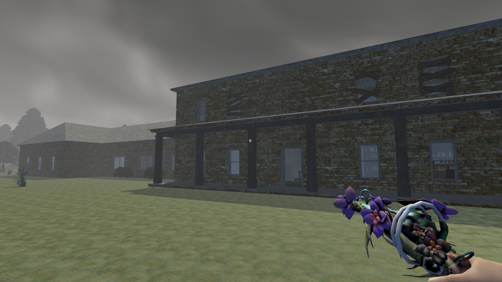

Godot/Unity Games
Scutum

https://toaster12321.itch.io/scutum
This is a 2D metroidvania video game made in game engine Godot v4.3 as a solo developer using GDScript.
You play as a lost knight with an affinity for shielding.
In this platforming metroidvania fight enemies and protect yourself to find a way out.
Survival Horror (In Progress)

This is an in progress 3D survival horror, first-person video game being made in game engine Unity v6.0 as a solo developer using C#.
Waking up in an unknown forest you encounter an abandoned... house?
Discover its secrets in this first person survival horror and fight infected enemies to save yourself.
Rhythm Game RPG (In Progress)
This is an in progress 2D rhythm RPG game currently being made in Godot v4.6 with a team of 6 people. Currently no picture is available.